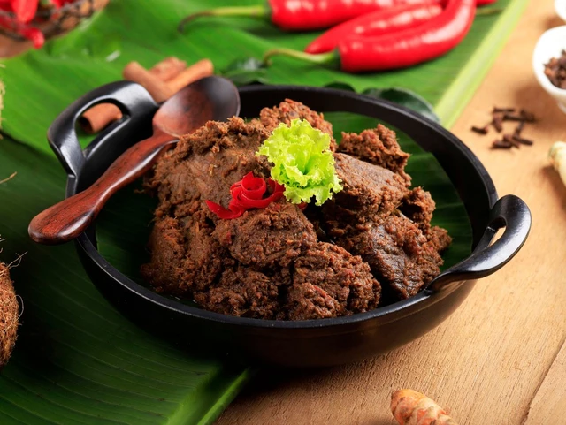

Mie Goreng adalah hidangan khas Nusantara berupa mie yang digoreng dengan bumbu gurih dan manis, dilengkapi dengan sayuran, serta tambahan ayam dan sosis. Praktis, lezat, dan cocok dinikmati kapan saja.
Mie Goreng adalah hidangan khas Nusantara berupa mie yang digoreng dengan bumbu gurih dan manis, dilengkapi dengan sayuran, serta tambahan ayam dan sosis. Praktis, lezat, dan cocok dinikmati kapan saja.

Rendang adalah hidangan khas Nusantara berupa daging sapi yang dimasak perlahan dengan santan dan rempah-rempah hingga menghasilkan rasa gurih, kaya bumbu, dan tekstur yang empuk. Cocok disajikan dalam berbagai kesempatan.

Nasi Goreng adalah hidangan khas Nusantara berupa nasi yang digoreng dengan bumbu rempah sederhana, menghasilkan rasa gurih, manis, dan lezat. Disajikan dengan berbagai topping seperti telur, mentimun, dan sayuran, nasi goreng cocok dinikmati kapan saja.

Soto Babat adalah hidangan khas Nusantara berupa sup berkuah gurih yang menggunakan babat (bagian perut sapi) sebagai bahan utama. Disajikan dengan nasi atau lontong, serta dilengkapi tauge bawang goreng, dan sambal, soto babat memiliki cita rasa hangat, segar, dan kaya rempah.